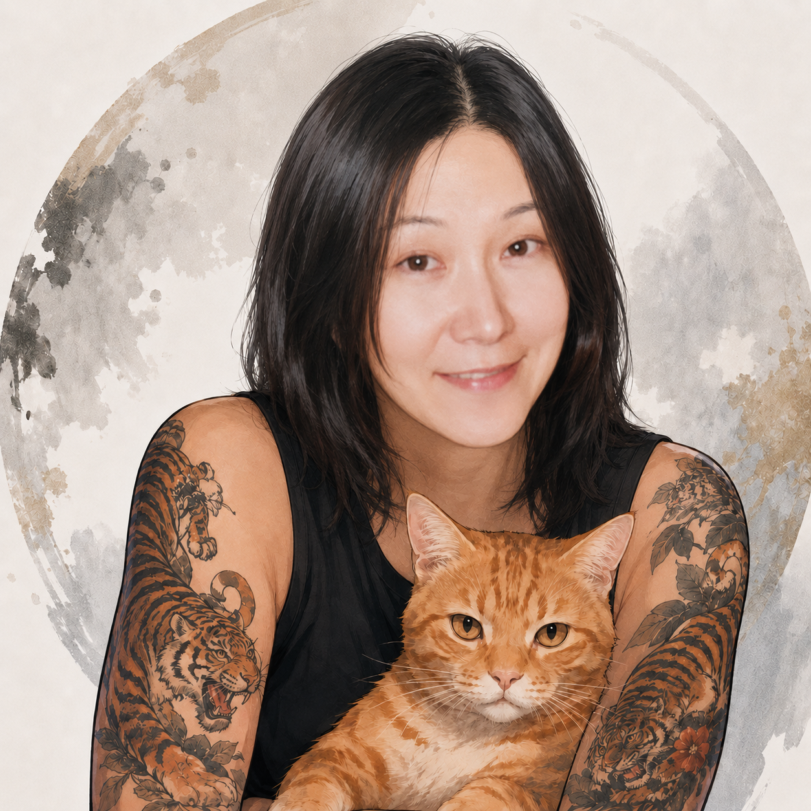

Ke
About Me
Student Web Developer
My name is Keiko Saegusa. My original major was Chemical Engineering, and now I am studying Computer Science and web development because I enjoy learning useful, creative, and practical skills.
I have always loved chemistry, and I am also a big fan of Breaking Bad. That is why I wanted to add a small chemistry-inspired style to this portfolio while still keeping the design clean and easy to read.
Pr
Featured Work
A quick look at my projects, web design skills, and future goals.
Portfolio Projects
View my project cards, short descriptions, screenshots, and website links.
Skills Learned
Review important course concepts I practiced in my work.
Next Goals
Read what I want to learn next as I continue studying web development.